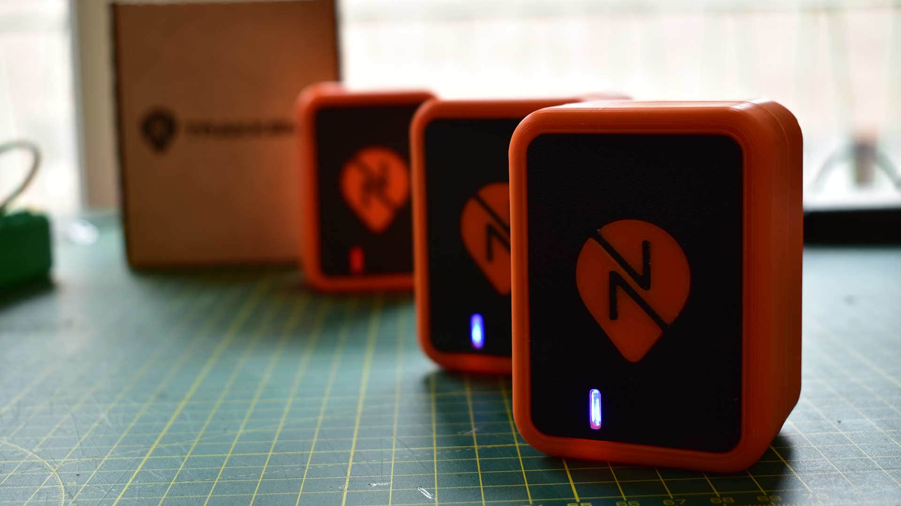
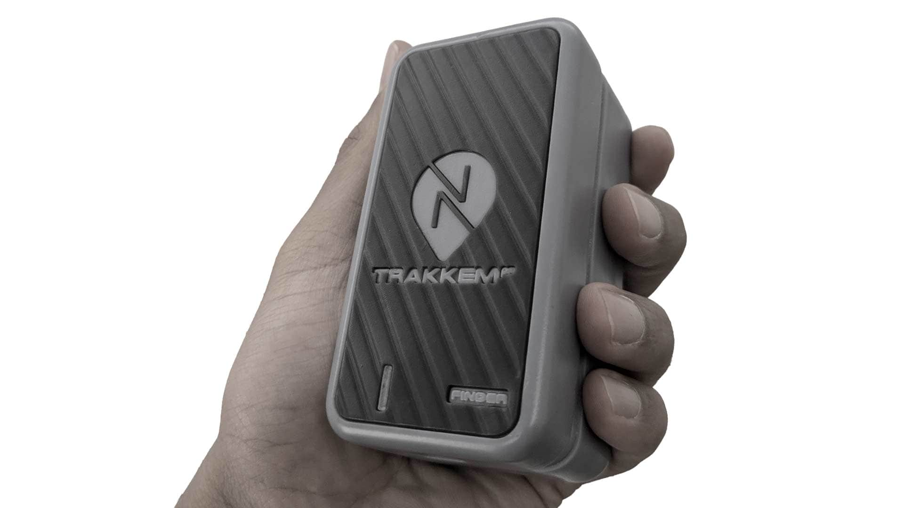
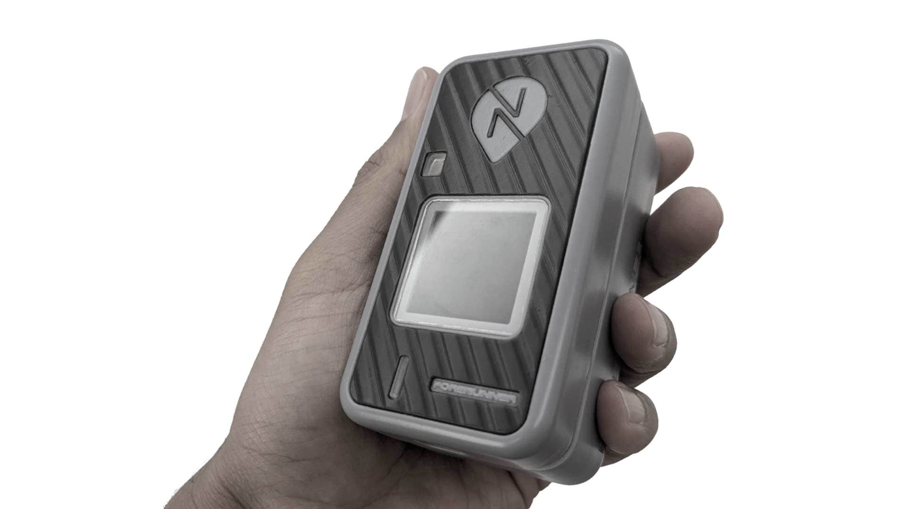
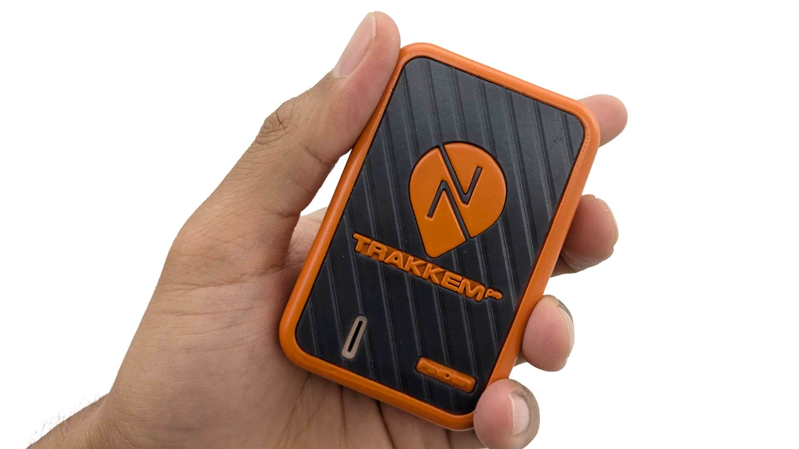
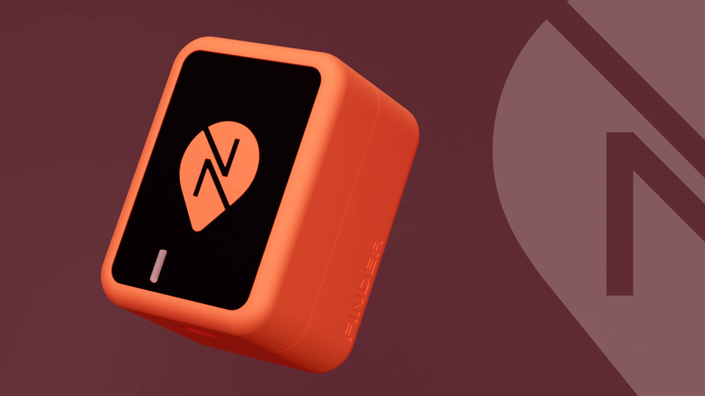
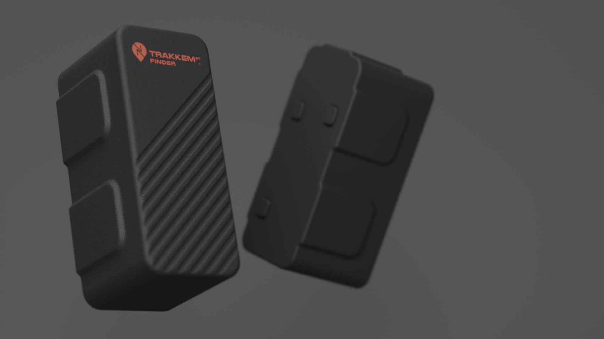
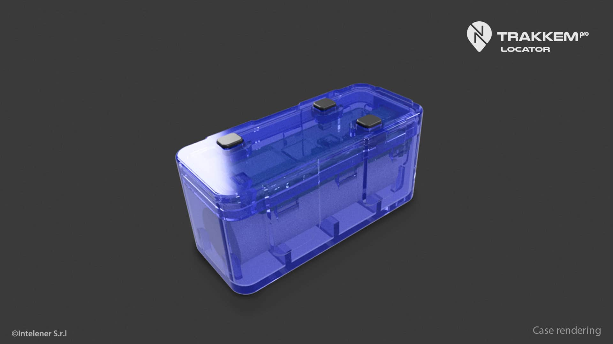
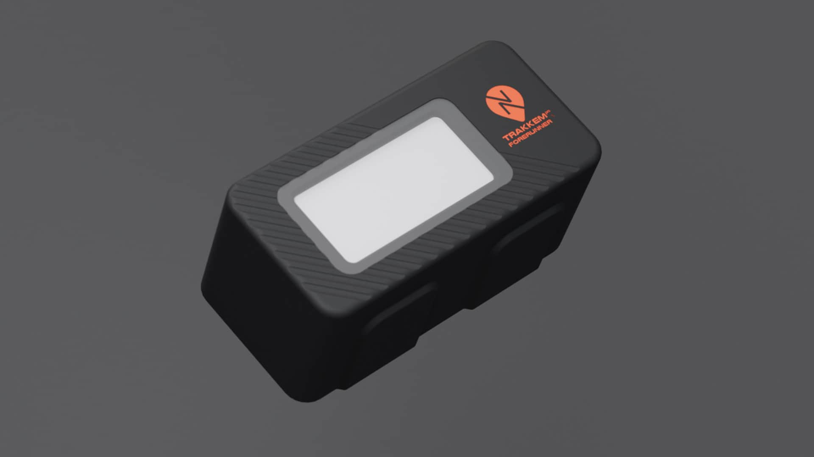
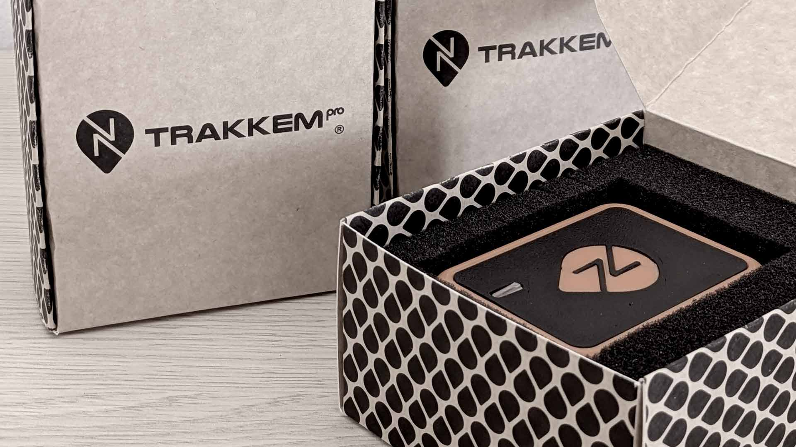
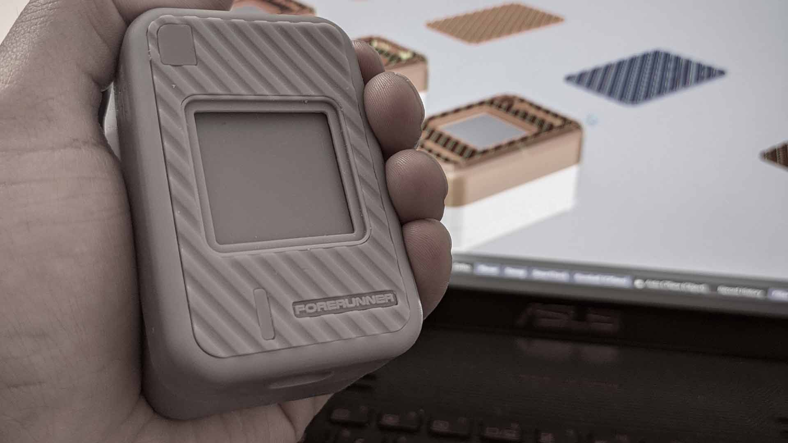

Trakkem Pro
Rastreo inteligente con identidad propia: diseño industrial que comunica y protege.
Rastreo inteligente con identidad propia: diseño industrial que comunica y protege.
Trakkem Pro es una familia de trackers creada para transformar la estética de los dispositivos de rastreo en logística. La idea fue diseñar productos agradables a la vista, innovadores y diferentes a los modelos industriales convencionales. El objetivo era combinar robustez y funcionalidad con un diseño que transmitiera identidad, confianza y profesionalismo. La línea incluye los modelos Finder, Forerunner, Copilot, Reporter y TempTag, todos con un lenguaje formal coherente. Las carcasas incorporan bordes redondeados, contrastes de materiales y colores con el naranja como acento principal, el logotipo en bajo relieve y el nombre del modelo en gran formato para reforzar la identidad de marca. Además, cada diseño integra patrones de textura y zonas diferenciadas en material para generar contraste, mejorar el agarre y evitar la monotonía estética.
Más información: trakkempro.com · LinkedIn
2017 – En proceso
Diseño industrial de las carcasas de todos los modelos. Creación de conceptos y definición del lenguaje formal de la marca. Diseño del logotipo y desarrollo de la identidad gráfica aplicada al hardware. Modelado 3D, renders, animaciones y motion graphics. Creación de prototipos mediante impresión 3D. Diseño de la página web y de la aplicación móvil. Supervisión del equipo de desarrollo para que la app se ajustara fielmente al diseño.
Diseñar una línea completa de productos de rastreo con un lenguaje visual coherente, atractivo y robusto, que destaque en el mercado y ofrezca facilidad de uso en entornos exigentes.
El mercado de rastreadores presenta dispositivos funcionales pero con diseños poco trabajados y sin identidad visual sólida, lo que dificulta la diferenciación y afecta la percepción de calidad.
Operadores logísticos, gerentes de flota, empresas de transporte, retail y cualquier organización que necesite rastrear activos y monitorear condiciones en tiempo real.
Monitoreo continuo de mercancías sensibles.
Seguimiento de pallets, contenedores y maquinaria para evitar pérdidas.
Control en tiempo real de ubicación, rutas y rendimiento de vehículos.
Modelos con sensores para temperatura, humedad o vibración.
Análisis de las necesidades del sector logístico, benchmarking y estudio de entornos de uso.
Definición de la forma, materiales, colores y acabados.
Modelado 3D de carcasas, planimetrías, tolerancias y detalles constructivos.
Diseño del logotipo, aplicación gráfica en el producto y uso estratégico del color naranja.
Creación de renders, fotomontajes, vídeos y animaciones para comunicación y validación.
Fabricación de prototipos en 3D e implementación supervisada de la aplicación.






Todos los modelos comparten proporciones, geometrías y acabados.
Uso de dos materiales diferenciados para la carcasa y zonas funcionales.
Carcasas diseñadas para soportar impactos y proteger componentes internos.
Logotipo y nombre del modelo en bajo relieve de gran tamaño.
Bordes redondeados y patrones de textura para un mejor agarre.
Integración con plataforma web y app móvil para monitoreo en tiempo real.
Se desarrollaron los prototipos de toda la línea conceptualizada, con especial enfoque en el Tracking Pro Finder y el Forerunner, cuyos diseños destacan por su robustez, estética y facilidad de uso. Estos modelos muestran claramente la identidad visual de la marca y sus ventajas funcionales.




En este proyecto he aplicado e integrado todos mis conocimientos en diseño industrial, diseño gráfico y diseño UX/UI. Ha sido una oportunidad para expandir mis habilidades en un proyecto de gran envergadura que requiere atención constante y soluciones creativas, impulsándome a mantenerme a la vanguardia.